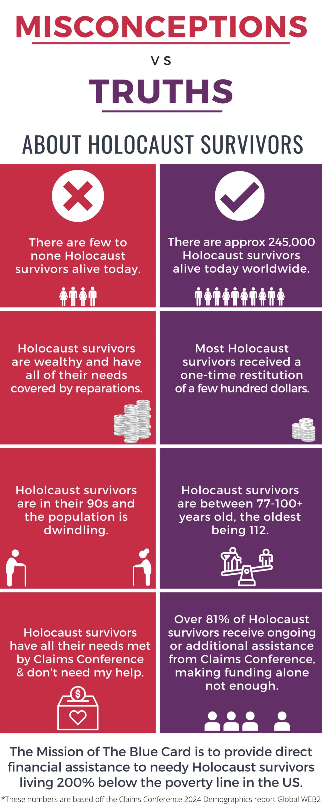

Our Mission
The Mission of The Blue Card is to provide direct financial assistance to needy Holocaust survivors.
Of the nearly 3,000 Holocaust survivor households The Blue Card serves, three-quarters are over the age of 78 and nearly 70% live alone. Many of these survivors struggle to afford basic needs, such as adequate food and healthcare; more than half of them fall 200% below the federal poverty line, meaning their income is less than $24,980 annually.
The Blue Card clients profile:
- Range in age from 79 – 105 years old
- 78% have difficulty performing daily activities such as dressing, washing, and cooking
- 77% are women
- 67% cannot leave their homes without assistance
As these men and women age, they are plagued with the consequences of surviving the most devastating conditions imaginable, including poor nutrition and minimal medical care.
Studies have proven that Holocaust survivors have higher rates of chronic conditions and illnesses like hypertension, kidney disease, cancer and dementia, than peers in their age group who did not live through the Holocaust. Unfortunately, too many do not have the financial support to afford treatments and medications, and so they will either forgo getting treatment altogether or paying other bills like rent or heat to cover the medical costs.*
Many survivors came to this country after World War II and worked in menial jobs. Tiny pensions from those jobs, social security, and Medicaid simply cannot keep up with the financial needs of this most vulnerable population. They are frequently desperate for uncovered expenses such as dental care, hearing aids, and transportation to doctors.
Dignity was forcibly taken from them during the Holocaust, and now they are vulnerable once again. The Blue Card provides direct financial assistance to ease the financial burdens and ensures that its clients don’t lose their dignity once again, in their last years.
